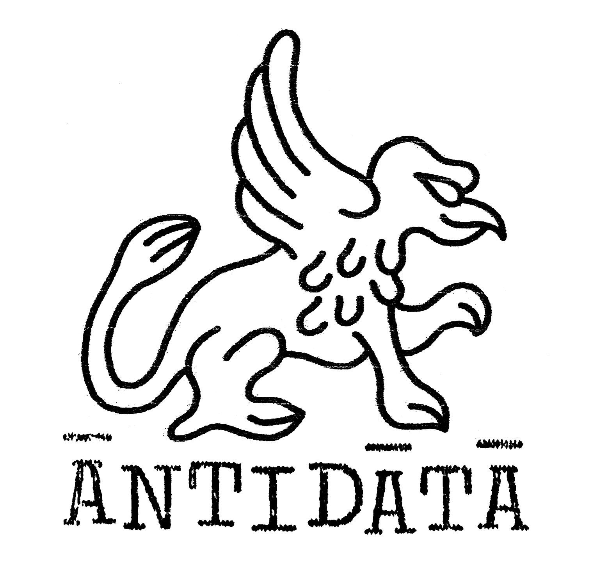

Antidata es aquello que no completa el registro. El fragmento que interrumpe la serie, el ruido que antecede al patrón o lo deshace. Si el dato es la unidad mínima de certeza [algo que puede almacenarse, clasificarse, transmitirse] entonces su opuesto no es el vacío, sino la señal que resiste esa lógica.
Algo entró al sistema. El sistema sigue funcionando.
Antidata is that which does not complete the record. The fragment that interrupts the series, the noise that precedes the pattern or undoes it. If data is the minimum unit of certainty [something that can be stored, classified, transmitted] then its opposite is not the void, but the signal that resists that logic.
Something entered the system. The system keeps running.
ATD003 - Piedra del Lobo
Eduardo Only es un artista electrónico de Concepción que durante la última década ha publicado en distintos sellos, tanto con sus diversos alias como con su banda Garay Palma. Ahora llega a ANTIDATA con "Piedra del Lobo".
Nuestra tercera entrega como sello cuenta con cuatro tracks que se mueven entre ambient, electro e IDM.
El EP toma su nombre de una piedra cercana al hogar del artista, un lugar donde los lobos marinos se tienden al sol y descansan frente al mar.
__
Eduardo Only is an electronic artist from Concepción who has released music on various labels over the past decade, both under his many aliases and with his band Garay Palma. Now he joins ANTIDATA with "Piedra del Lobo".
Our third release as a label features four tracks that move between ambient, electro and IDM.
The EP takes its name from a rock near the artist's home, a place where sea lions stretch out in the sun and rest by the sea.
ATD002 - Ectotermia
Cuatro temas armados a punta de prueba y error, entre drum machines, hardware, software y cualquier recurso que pareció tener sentido en el momento. Ectotermia se mueve entre el electro, el downtempo y el IDM, con un pulso funky que atraviesa el disco sin renegar de su propio sonido.
Incluye remixes por Seudo Plot y René Roco
__
Four tracks built through trial and error, using drum machines, hardware, software and whatever else made sense in the moment. Ectotermia moves between electro, downtempo and IDM, with a funky pulse running through the record without disowning its own sound.
Includes remixes by Seudo Plot and René Roco
ATD001 - Figurita
Figurita no es conceptual ni lineal. Producciones forjadas por la experimentación y la casualidad a lo largo de cinco años, que fueron adquiriendo carácter al revisitarse tras largos periodos de pausa. Comparten el mismo espacio, mente y contexto: una mezcla de estilos y emociones decantada en un cóctel sin forma establecida, pero con referencias claras.
Incluye remixes por Kytao Debuya y Zetor
__
Figurita is neither conceptual nor linear. Productions forged through experimentation and chance throughout five years, that gradually took on character as they were revisited after long periods of pause. They share the same space, mind, and context: a blend of styles and emotions distilled into a cocktail with no established form, but with clear references.
Includes remixes by Kytao Debuya and Zetor